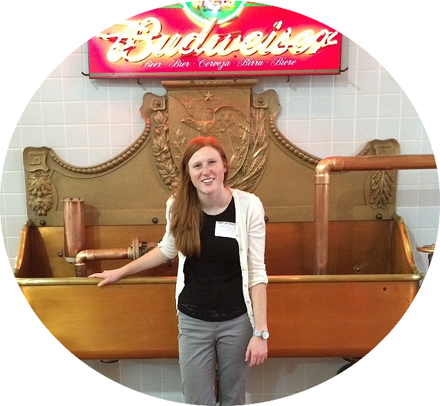
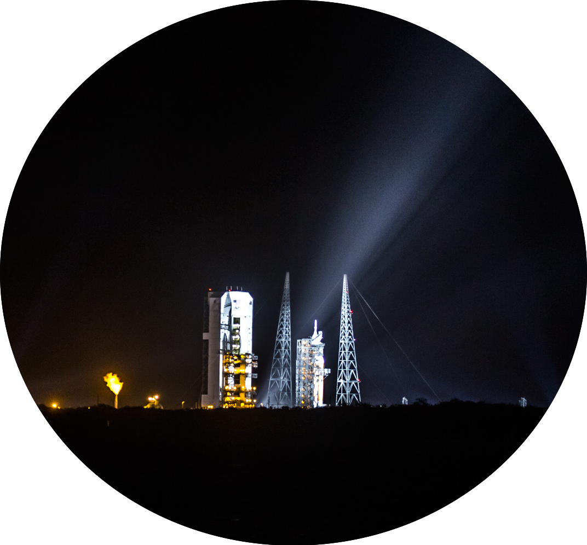
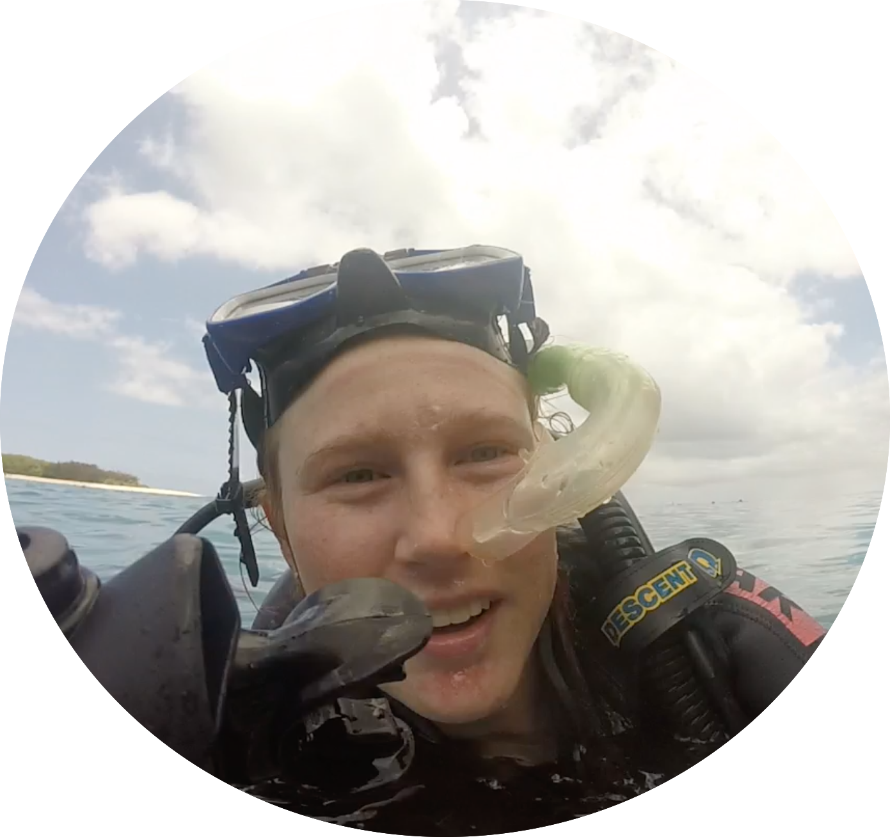

Anheuser-Busch Inbev
Scholar
University of California Berkeley
Engineering
Squinty | Smiley | Giggly
Adventurer
Following senior year of high school, I joined the budweiser scholar family. To date, I have spent two summers interning for its disruptive growth organization: 1) as a GMT intern designing algorithms to influence market strategy 2) as a startup accelerator intern building onto cutting-edge image recognition technology. To help shape environmental policy, I was sent by the company to Bangkok, Thailand for the 2015 One Young World Conference. I am one of less than ten annually chosen global scholars to recieve a full-tuition scholarship from the company. You can learn about the scholarship program
here or the disruptive growth organization
here.
I attend the University of California Berkeley where I'm a junior taking upper division courses in math, computer science, physics, and electrical engineering. I'm currently deciding between the engineering science math and statistics major and the electrical engineering and computer science major. I have dreams to study English literature and philosophy abroad in the UK for the 2018-2019 school year, while doing computer science research. I teach a four student supplementary discussion section for our introduction to computer science course (CS61A). This coming semester I intend to start doing research with FPGAs, which I'm incredibly excited for!
Scuba diving, backbacking, climbing, rubbing jellyfish heads, running, biking, listening to music, snowboarding, camping, riding motorcycles, trying new foods, and traveling all make me feel alive. I also enjoy reading (nonfictions), writing (short stories, blog posts, analytical essays), and coding, and am trying out my hand at photography. Ask me about my backpacking trip in Utah or biking trip down California's route one. Next up on my list of travel destinations are Iceland, Eastern Europe, Tel Aviv, and New Zealand. I intend to bring my new camera everywhere to capture the world's beauty and precious memories to come.